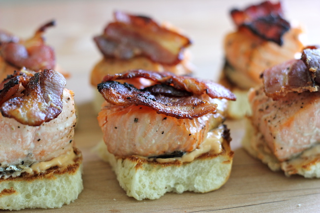
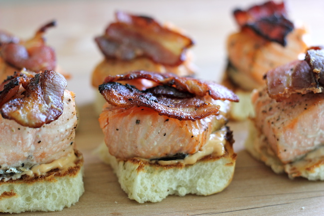

Break the Fast
Breakfast aka the most important meal of the day. The possiblities are endless here because well duh its granny who is in the kitchen. Gran gran back in the day would treat us to some crepes (delicate verison of pancakes). Personally I was partial to a crispy crepe pumped with vanilla, banana, and fresh strawberry filling with a dark chocolate drizzle poured right over it. Now if you thought that was it think again cause accompanying the crepes was God's gift to man, BACON. Like the billion times I said it this is granny's house. The bacon she made was never alone it was either served wrapped around some sausage or if she was feeling bougie... fish particularly salmon or some snapper.
 
